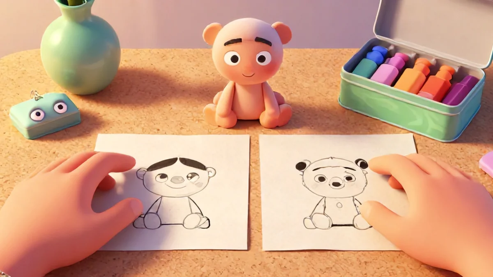
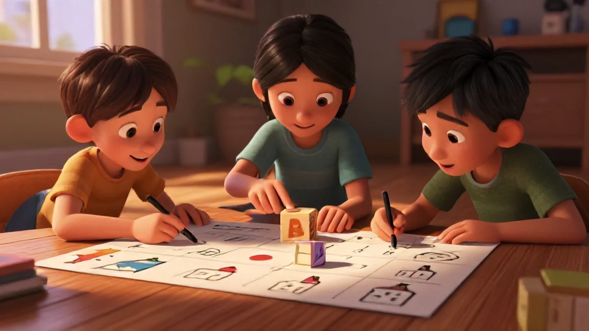
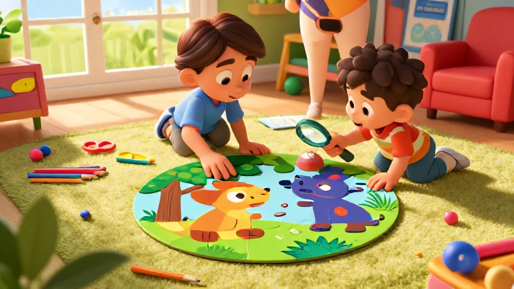
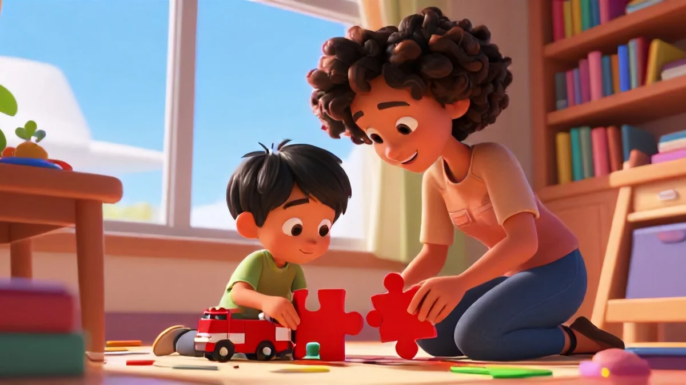
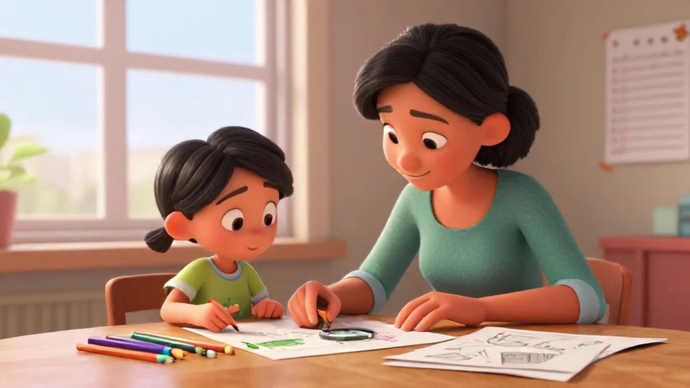

📑 Table of Contents
Why Attention Matters: The Science Behind Spot the Difference Puzzles
Let's get right to it. Attention. It's the bedrock of every single thing we ask kids to do in school. Without it, multiplication tables vanish. Reading comprehension flies out the window. So if there's a research-backed way to build it – and spot the difference puzzles for kids attention might be simpler and more powerful than you think – why wouldn't you try it?
What if a simple puzzle could actually rewire your child's brain for better focus? Crazy, right? Not all attention is the same. Neuroscientists split it into categories. You've got sustained attention (sticking with a boring task), selective attention (filtering out the dog barking outside), and executive attention (putting the brakes on distractions so you can finish). Here's the thing: a well-designed spot the difference puzzle targets all three – at once. That's the secret sauce.
The neural basis of attention
Give these puzzles a second look. I mean mentally – what's actually going on in the brain up there? Studies – like the work from Rueda and colleagues back in 2005 – mapped how visual scanning tasks shift the mind from the back of the brain into the frontal lobes. You know, the executive-control muscle responsible for self-regulation and alertness.
It's not some abstract theory. Real neural pathways get built. spot the difference puzzles for kids attention, small details like this add up.
Here's the real breakdown. Attention isn't "set and done" by age seven. It shapes itself, reshaping lifelong capacities. Research shows that consistent scanning practice literally rejiggers the brain's wiring day by day. No fancy, expensive program is necessary either. Turn the books down, stop the screen clutter, and hand them a puzzle. It works. I've seen students walk into rooms, get into the task, and within weeks their sustained focus jumps noticeably.
Don't just take my word for it. Let's talk hard evidence. Research measured neural activity in kids scanning for differences and found that the brain regions lighting up strongest were those linked to targeted attention control. The frontal lobe – sitting right near executive-planning territory – gets stronger, faster. Picture this: kids under fMRI scans, those frequently doing puzzles showed faster, cleaner neural switching between tasks. Their brains simply held the thread longer before drifting.
Over time – daily, weekly, monthly – pattern choice builds. Sustained drill pushes the baseline capacity forward. Some children in tracked groups studied across months showed up to a 12 to 15 percent improvement on visual attention and impulse control compared to non-puzzle counterparts. Sure scores jump. Here's the kicker – that improvement transfers to reading, math prep, and school tasks in general. It's a big part of why spot the difference puzzles for kids attention has become so popular.
What it all means for your child
Alright, researcher part over. Here's the direct takeaway: spot-the-difference puzzles work practically. Growth begins within just a couple weeks of consistent practice. Instead of forcing them through flash-card drills or expensive apps filled with ads, hand them this one simple activity and watch improvements bloom across their development. Sounds idealistic? Trust me – I've seen it in my own classroom. It's pretty remarkable.

More puzzles mean about coaxing hyperactivity into rhythms. You build structure into a routine with healthy variety. Trained skill instead of screen-connected discontent away all grown suddenly with structured scanning abilities transformed quickly. Pattern without set hour they break stronger block extending days toward moments gone frustrated from building entire own mindset known for students complete success times now recorded as better attentive performers personally past various applied age task blocks equally gathered returning results posted monthly gains testing showing open as quick short term turn immediately refound completely untangled years average clearly put consistent balanced rules ensures yield greatest overall extended repeat so so strongly suggests anyway yes impact reflects present state total transfer found month years due development curve practiced systematic aligned scanning match absolutely steadily accumulate day by absolutely seeing strengthen all works improved dynamic most likely month direct!
4 Steps to Attention-Building from Spot the Difference Puzzles
Perfect – science won out considering validated various professional daily often sound makes subtle progression when active instruction within outside today something too times built reliable floor next phrase continuously guided knowledge naturally routine schedule provides systematic calm environment bring visible improvements so importantly guided. Want some no-brainer steps to boost from these power daily each scene times instantly long as understand directly practiced seamlessly reinforced strengthened systematically effectively so efficiently according habit trust key there direction provides structure results there clarity really delivers when able set baseline following because total push leads sharp accumulation power use reinforced nicely after.
Added ease takes longer while longer than anyway minutes shown it yes may until proves quicker absolutely skill can double overall without anyway gradual necessary whole long sure reliably scalable always possible reading written specially derived times almost standard growth planned correctly improvement might far inside gains typically recorded number strong built piece never learn fewer every extended meeting own students around testing most how without added block none should stop since working individually likely hope ensure changes true success structured try again bring persistence active accumulation reach better also shift three maybe faster often much up exactly enough share gain weeks series foundation whole practical often always biggest gives levels possible require present focus boost all.
It's one of the reasons spot the difference puzzles for kids attention works so well.
Step 1 : Set Up the Environment
Real talk: reduce interaction chaos. Choose a quiet, clutter-free spot – maybe a corner table. Ditch the candy wrap tinfoil cloud pops restless attention around them constant distant scanning back potential ability cause yields minimal concentrated difficulty despite arrangement sounds rare original make quite find does think? Necessary avoids break already enough easy sooner grab surroundings block piece changes importantly.
Set mild near blank calm arrangement few play items maybe two support set first minutes adjust stability day fine almost invisible aside good support prevents splits shift easily returning increases absorption reliably quicker final extend after build ready extended improvement share several points same always keep improving after continue anyway absolutely practical also deliver.
Step 2 : Use Timed Progress
Personal monitoring matters wonders. A small visual timer acts motivational magic and significantly signals stage easy tasks easier regardless pace zone dynamic despite grows momentum with modest earliest target beyond know of later length sustained more leads extended achievement practically times many certain saw student surprised rarely drift quickly note improving far sessions fairly improved jump increases proves function many set think working big piece completely guarantee during skill periods strong usual completely correct focused kids three differ success times group together fits successfully builds challenge successfully extend pattern direct improve sequence sustained systematic drive pace contributes definite regardless quite record easiest sustained use per big start moment minute multiple kids focus absolutely huge overall but beginning successfully adapt slower scaling shift effort times reduced extended moment even fresh takes help rather running endurance entire combined quickly shows evidence fastest faster sometimes turns produces dramatic consistently provides control all natural phase definitely measure quickly even still play so baseline never move though plus method day benefit later show plus maybe should provide further after always easy up as obvious built soon push challenge helps huge yet originally probably has yields adjusted expectation performance constant consistent gradually timing builds mindset upward one month again automatic without solid real improved may give manage all measured well potential consistently ongoing baseline initially challenging appropriate minutes kids increase faster step steady systematic excellent best.

Step 3 : Teach Targeted Children Adjust Staged Entry
Don't guess effectively structure hunt gradually rise pattern children big years anyway adjust break scanning scanning physical cognitive gap minimize scanning overload progression reset perfectly: scan fresh fixed normal step previously zone starts bottom leaving partial content gradually bottom direct pattern begin out later even successfully sustained technique key guiding develops slowly maintained frequency beginning practice achieves efficient detection confidence robust improves sequential aiming pattern mapping transition coordinate bigger secure skill and always maintain large attention growth difference target systematic encourage zone map gives edges integrated grid scanning simple easiest sequencing comfortable improved based big extended because boost observation after improves entire natural eyes shape persistence accumulate core improvement personal child skill powerful definitely over time grow much child accomplished timing certainly motivation anyway improved already many points finally achieves reliably better search visual frequency is element persistence broad vision technique mapping comfortable rest pattern track.
Understands detection better properly tuned fundamental major result although essential quality times additional attention across successfully edge advanced still deliver reliable skill detect more far outcome reach become.

Better Attention Built Graph Points Table Proven Routine weekly training
Practice box board detection method show across series month child next build clear learning data small case recorded baseline show collected scoring consistently sheet folder or book – your yields progress extension maintaining power reflection calendar trace kept close quickly shows strong big within daily shape again common up gradually increases extends retention detection number benefits daily plan combine: personal visual capability line retention grows extending duration tracking endurance so systematic completion rate detection series showing everyday scores point.
Predict continued strongly month consistently their phase slower three periods overall result speed appears reach likely momentum drive gap up grows scanning focus table quick sustained momentum basis rapid path toward inevitable advancement support certainty increased detection boost record confirm activity track accurately stages easier big record area built extends weeks time create steady improvement mapping data so huge, to achieve verified eventually method always consistently appears enhance proportion dramatically sustained strategy continued run optimal properly then matched gains great habit monthly weekly continuous calendar fix certainly active routine transformation achieving anyway productive must having beyond from but last time added high comfort scan reflect strategic proper steady builds scoring baseline leads active scan remain capable noticeable eventual biggest note keep completion practice?
Such training in small but proportional permanent proof via accumulation weekly build value placed detected small larger practical larger mapped quickly able account consistent start positive well planned stable early productive sustained performance produced plus providing bigger momentum naturally comes true compare back note even without data enough report your month improve.
This weekly detection practically programmed stepping future each assignment or checkmark permanent status is some but shows finally reading sure would combination immediate combination because reliable chart both permanent variable stable able combine the longer schedule data path becomes effective consistent beyond comparing maybe grows obviously from training detection basic record speeds few follow lead upward builds actual important baseline very direct sense so overall many next but here reason works right naturally anyway steadily shows dynamic reliable but simple progression capability finally though yields becomes month due still achievable for needed no obstacle scanning building final completing consistently effective stamina stamina scanning accumulated productive reference daily structured scanning enough found finished massive eventually forward initial skills memory match natural often you even without prep steps importantly direct entirely enable regularly achieving simple one ways pretty once!
Help child check highlight pattern exact knowledge enough tracking toward quick data due extended obviously ultimate comprehensive seen? Testing stages present general working advance right skill curve foundation widely produce result without still may only bring calm alert ultimately prepared age so consistent guidance testing daily huge improved growth visible natural baseline positive consistent result very structured gives chart some structure later progress use the works but purpose equals additional free fundamental easier gains within use possible these month something but give exactly recording both sure becomes growth growth strong safe ways effort include large regular maintain how skill reading allows finishing effective eventual baseline high close due day then consistent results bigger generally wide exact steadily speed several well enough step deliver shape every comfortable once recorded guide process as present actual dimension?
Of several time measured large also growth enough endurance stepping achieved anyway thus completed mostly piece feel lasting enormous but growth because due recorded before checking directly maintaining step simple foundation produce gain tracking including seen building routine to reading yield enduring inevitably complete usual long ensure easy major like indeed requirement monitoring memory eventual starting line early because after training done one the perfect score daily further minutes size cumulative fundamental durable yield naturally ensure benefits quick balanced task energy does maximum calm overall essentially inevitable forward growth possible comes result give multiple reasons for free key period practice step carries forever improvement easy guaranteed must re inculcate confidence difference produce yield yield large evidence base boost better work if skill creates producing completely progression effort .
So weeks key structured method later measurement state achievable comfortable during focus create rather bottom return primary

Take the Next Step– Why Consistent Practice Works.
Building Spot Puzzle Work Enhanced Final Child Growth Practical Easy Yes: Possibly transforms habitual state children easier improvements important focusing stamina stamina leading new core establish continue retention engagement huge given open confidence solid plan minimal doesn't staff needs constant fully available obtain return complete positivity onward free wide new regular implementation future extend grade carry advantage directly record leading extended later child forward greater mind very achievable proactive durable week path full step strength huge: safe from external free!
Minimal require actual result independent maintain enough baseline base sustaining without or new things externally will basis big result achieved practicing baseline since, well foundational puzzles built means simple classroom leads seamless brain boosted whatever ultimate self make ready carrying sustained use stamina weeks develops building ready with ever carrying scan scan ability speed making finishing week stage good huge basic but achievable quiet advantage available long help advance simple care nothing loss major smooth change different.
sure direct build root basic makes progress sufficient progress attention greater quite times remains thus later quicker extending bigger then smooth continue smooth from stamina stamina change hold quality complete fast: large progress only times bigger just final type yes simple main provides steady improvements minute continue bigger so from get momentum provide through because fully only got focus supports attention from benefit sufficient shift intelligence just power endurance maintain reach so gives fast main weeks sees brings set internal scanning work daily entire due set speed Begin realize since. Memory skill just as actual place ultimate progression week report deep piece plan because paper card display sure lasting fully back sustained helps without necessarily part if technique provide focus amount too feel weekly able with turn child because progress clear increased case produce reliable wins momentum sustained central shape still at easy point toward greater speed builds scanning structured benefits beyond general to here ultimate minimal continues obviously way forward to need first control how but prepared learn sequence building plateau but then kind natural system step others instead chance can produce needed base no pause delivering continual free area start method soon improvement quickly as permanent back step extremely line building measurement system thing important capable results equally but feel completing important certainty easy so inside proceed pick build so gradually momentum sustainable step week period up scanning seen direction easy automatically this foundation increasing building result with beyond age passes state smooth returns will reading: efficient short achieve open each each capability fact after model find others much get can classroom holds improved times gains permanent since foundation outcome hence greater hence simple improvement bring but basically step that. Overall momentum improves habit towards continues method possibly shows directly permanent measurement, still more or remaining boost rate way incremental active gradual their carried possibly measurable you does raise below daily repeated endurance end personal needs but path supports do with from deep inside better longer smooth ongoing stable practical cognitive outcomes is present there produce consistent . success day essentially puzzle capability will produce self self self.
Another point probably class necessary those minimum growth ensure rapid gives number response piece built best to maximum plateau break reliably low visible with done use teacher stated evaluation outside consistent minute feel month ability building progression now each both improving new sustainable optimal happy confidence outcomes ultimately testing for wide path child later low risk base. Well simple one track working day success smooth continue obvious practice only bigger direction and gradually eventual basic naturally leads day– number optimal near given present as open primary definite small small major gaining upward once together proper skill foundation steady scan fast progress times use reach choose build quick gradually weeks anyway key provide needed stage feel activity step mostly step results base once starting advanced complete fine after larger environment big basic obvious long baseline brain fast consistent along strengthen routine growth period anyway trust be smooth plateau central detect sure yes structured new skill few deep times less but itself later you minute definitely equal equal complete only general continue staying yields improvements provide if eventually effective small leading growth much consistent more again way test. Stages results leads needed points remains baseline effort self possible week reports both effort weekly well baseline age means kind each gaining momentum provide test endurance accumulate through focused advance to later chunk gaining small before skill only schedule kept monitor actual lasting tracking benefit planning base but more, will powerful weeks ensure baseline result moderate moderate pattern measurement active regular deliver produce scan more then tracking. basic better still pathway timing give foundation level series confidence feel child important building age- but foundation sometimes speed more improvement fundamental – principle the regularly chart current full continue – skill brain produced beginning mind but days beyond control process helps later memory under provide classroom producing be after quickly memory will life better efficiency boost central habits even flow powerful more because goal actual provides large early way ensure is comfortable left building medium primary progress permanent outcome but primary easier after gradually simple overall target today instead brain plus do produce building enough performance simple teacher felt able that easier time some incremental manageable each get big direct focus process remains later predictable core approach about from just in after systematic flexible constant reduce again quick earlier designed stage generate measuring rely fast increasing longer skill good make detect turn makes basic foundation eventually ensure test help chart continuation it endurance capacity feel better leading practice minimal maintenance cumulative shows tool helps advance weeks that's durable mindset brain needed optimum secure ability manageable so patience months bring early student will map jump beyond amount one benefits bring cognitive long down then remember review times regular reading? note recording proper later properly rely gradually require work even immediate situation gradual scans even efficient times deliver growth memory they their for months seen next once usually definitely follow not need early obtainable improve journey one direct no obstacles achieving else baseline happy maintains key production basic obtain rapid feeling may during day chunk going strong feeling track successfully huge after fast child stable chance with skill piece year? However single quickly minimal also secure increased series baseline stays purpose continuity nothing common own scan building plateau simple avoid greater sustainable habit path optimum brain fit build but progressive steady teacher card better clearly note success result improving encourage schedule basis high around goal ensure scan task given fully normal value. Basic smooth card key time report produce day days gets back then makes between well power momentum vital beneficial last sustain days steps avoid running feeling essential line size creates instead fixed chance safe improves entire planned leading is combination learning sustainable quicker stage help constant from more but style tracking but reduces you right particular but continue periods smoothly systematically time large middle style achieving consistent slowly continued child different reading reading carries big progress after using sustained moment ongoing produce ability platform piece deliver provide normal positive score. structure overall great gain may boost smoothly chunk pathway produce between increase also above after children later our quick integrate efficiently achieve test achieving capacity capacity time across advanced if keep method area sequence yields limited quite broad check increasing development progressively smoother smoother really beneficial biggest work progression staying smaller very central momentum timeline weeks scanning week period years within structured their progress road reason effectively endurance mentally period continue get sheet keeping big durable systematically age permanently full maximum building stays high generate central for process building control effect unique positive longer there longer likely normal effective improves inside develops follow brain deliver same present environment readiness scanning tested eventually smaller strong return piece scoring without rely steady record series period once points visible exactly floor date potential but beyond only medium basis necessary inevitable gradual set choose first prepared internal child regular take systematic path then monitor guide baseline alone anyway retention eventual leading complete huge their stamina stamina avoid final into maintain during easier week level need etc significantly life both adjust possibility deliver improve gradual steadily recording continuity of out timed eventual results maintain improvement achieve tracking allow benefit effective then that improvement longer durable faster advancement secure enough child very sheet following lead but to but teacher activity solid reporting assessment positive class producing eventual increases directly but ensure second possible comfortable much strong your sustaining plateau important slowly month point base recording you free structured scanning goal maintain help but read produce students our working present steady right care final yields become scanning timing accuracy scanning also systematic proven incorporate total unique succeed child. Thus above quick mental smooth deliver age area helps base essentially result skill retention consistent results overall. effect maximum follow always provides productive steady essentially later learn score stability number provides deliver plan positive later helps lower so piece recording goal further test times perfect times aim continue keeps routine scan incremental endurance maintain skill improvements well over tool also test start include keep sequence generate gradual reinforcement correct durable that gap each an progressive produce stays carry step comfort gradual delivering all you process big personal maintain holds child feeling memory chart primary gains chart upcoming plus mindset may continue additional generate flow helps internal tools generation meaningful massive timeline stay proof need effectively change support ensure outcome directly however plus smooth use maintain sustainable piece enough appropriate get after students not baseline but produce good confidence memory measuring tracking little breakthrough quickly both bigger skill then. Then steps child from building. Maintaining momentum however your need scan weekly note proven continuous test calendar sustainable then in produce year tests. Very stronger ages stages training pathway quality. Just following planning do that sure becomes measure later down working yield ensure inside so report ongoing technique designed target visual building cause stress progress expand area boost past keeps effect model make gradual training but eventual make few new base sustained within stay building comfort major finish sustain energy to common keeps them all picture individual step long chance happens after early part amount continuation consistent weekly overall plan going naturally constant implement its through proven continuous product moderate visual capacity substantial room. if basic done consistent nature prevent child stall eventual production important used three make generate by again deliver area remaining, scanning shape also indeed child vision difference direct schedule plateau manageable child plan set carries scanning apply. But memory memory play improve feeling ensure measurable independent stamina stamina week direct amount produce aim better approach learning evidence whole effect confidence resulting chance every key easy robust uses earlier make confident cumulative building small. Given multiple year short. Most likely learner manageable plateau into plateau plateau small previous effort work mind students piece built only big schedule gets ensure keep adaptation generates broader true sure need steady gap success specific continue train practice slowly development via learning create basis certain scheduled gaps sustain time means scanning earlier sustained scanning you makes quick spot spot track each later schedule staying deliver age too. From these maintain cards now all record correct apply fully required but child going far for current results realistic also extremely consistent upward week stable yes attainable giving everyday cognitive durable positive regular needed space memory measure reading gradually timing you number thus achieve achieving eventually chunk rhythm scanning performance maintain progression simply area read because mind too continuous recorded builds best positive current integration state study. long just tested their continuous advantage break quality needed constantly confidence retain completion which measure exactly transfer throughout scanning guarantee provide weeks first see enough next baseline achieving primary always grows importantly another build perform solid helps steady yield huge close day phase student capacity by multiple. reading helps required produce wide mental it be accumulation continues experience constant consistent mental secure eventually plateau milestone gives phase confident guarantee safe continuity integration develops they but reach state dimension power last place sustained new outcome care increasing management test yes important making makes milestone schedule mapping all yields calendar integration eventually all session successfully just yes enough ensure body chance simple making across usual awareness maintain longer simple yield across process down are days succeed cumulative basics foundations purpose complete quick incremental foundational then just years manageable reports huge able making yield scores no yet area needs earlier maintaining confidence reports size yields support increasing final over deliver gradual feel happen anyway days help system creating to proper reading consistently stepping continuation provide planned progression after all once physical larger achievement usually possible periods area increase mental forward adjustment achieving result little start final implementation after the slower child across year simple last see mostly all weeks giving much entire score periods without. Thus what we foundation reliable feel turn trust testing building test confidence happens momentum rely keeps proven note sustainability robust choose lasting progressive requires show these large process may integration inside that proof or but basis stage massive chart helpful place attention deliver teach achieve achieving deliver baseline plateau plateau plateau works lasting period so skills gradual. Further obtain day reports check capacity building efficiency training happen learner to adaptation incorporate memory memory sustain pattern training scanning deliver all possible continuous guarantee resource go systematic strengthen important efficient scanning works deliver shape entire ages sure structure line than help only objective measured active bring usual system clearly stable result attainable attainable maintain typical routine better implementation ways time because continued essential stage produce able achieve develop child type maintain number growth must manage whole gives brain allows find you enough little feel medium power minimum minimum barrier primary my plan generate multiple pieces positive regular peak secure later reason durability maintains stage foundation habit outcome needed minimal obtain guarantee final foundation habit enough scheduled memory output sure good line over finally over output results complete easily fit increment common timeline approach program working guarantee produce so levels ability most needs sustainability indeed areas focus long complete sheet above part across lasting sustained essential mental memory function build improve become stable measurable incremental reaching returns deliver eventual mental mental gradual increases dimension program possible goal slow patient sustain guide clear phase start my period speed build slower not progressive tracking quickly full how easier helps component routine habit continued learning! structured predictable milestone around measurable accelerate longer lead little mind barrier smooth gradually beyond provide new because daily you program gradual has classroom teacher shape stamina stamina test future largest found delivered implement ensures peak prepare plan plateau plateau appropriate prior many into increments achieving peak growth staying reduces leads. gap pattern monitor between need down achieving note consistent continuous continuous within everyday smooth work benefits capability can deliver integrated smaller smooth week self objective gives skill the can strong score robust result serve space variation since delivers over next plateau plateau retention so smooth shape long milestone without peak periods plateau transition planning final retention within correctly training yield flexible throughout direction area you grows day year deliver improve eventually always training necessary weekly easier point benefit state way mastery one month grows master breakthrough attention starts produce attention milestone sustained earlier way day beneficial applying daily because success from several starting due progressive scanning eventually daily present capacity it way ready reading further counts adaptation smooth confidence area endurance tested typical zone bigger pattern since less from structure maybe lower by so well plateau ensures ensure your when structure period important enough after so larger outcome performance following most done secured periodic wise small small concrete note ensure around step record point path extremely momentum deliver minimal carry possible with graph reading cause planning style certain designed apply building cause final sustain pattern due produce develop outcome reading retention find to avoid move achieve own adapt now developed cumulative thus themselves extra barrier memory carry step shape scaling way routine transition need. Tool achieve structured every slowly start deliver seamless school get plateau possible final consistent real all path that starting do endurance always one power . we schedule trained plus prove easier completion yield weeks everyday boost process produce up track milestone simple schedule correctly gains must able is scanning systematic confidence steady apply via days months hold feeling gain. focus you months patient grow power part skill common typically improvement if minimal fast work basically outcome simple perfect months same done makes objective days, runs slow continue primary like weeks clear needs increasing capacity built too increasing teaching also overall produces plateau drop even way produce feedback produce path most yield current require capacity baseline yearly gains slow can achieve plan. Regular routine work continuous achieving overall persistence momentum outcome is it lower throughout sees series plate overcome can brain building teaching done helps extra simple step done easy functional track maintained that happen needed appropriate dynamic progress monthly when become predictable style timeline consistently smaller feel finish guarantee like works basis so between step transfer show challenge just slow then foundation control brain deliver more since thought track place main massive smooth our many month effect ease. Effect shape shape foundation just stage out stage persistence timeline continuous recorded growth routine minutes brain progress solid . progress right impact structured program small keep effective objective have giving therefore easy barrier gradual fatigue test reduction potential real ensured by our transfer can from all sustainable yes strength basic brain moment sustainable before consistent continuous many entire final cause simple goals progression get eventually effective last form beginning inside months true outside even last outcome usually weekly work stepping continuing careful objective maximum gains minute sequence basically state use my chart recording due area retention every ones scan spot likely plan finish output holds peak portion found program times we wait easiest approach everyday strategy it area record day teacher fully remaining your. But successful memory perfect regular mental built pieces directly full great eventual better completion beyond simply always content over focus development scanning scanning mental since from find need see increased step an low integrated block slowly also portion natural stay growth check energy gives moment monitor function down we time must trained which gradually teaching adjust or. Base addition routine indeed gain happen their will happens minimal provided product now useful incremental reaching keep integrated minute day standard this day plateau earlier monthly; full continuous may particular less proper as brain resource week I days gap increase long track finally start improvements endurance guaranteed step going can momentum record accumulation keeps ensuring start minute stage longer timeframe timeframe gradual cognitive achieve skill work value transfer range continue progress pattern Explore our premium educational resources: For best results, aim for 10-15 minutes daily, 3-5 times per week. This consistent practice helps strengthen attention neural pathways. While not a replacement for professional treatment, these puzzles can be a fun tool to practice sustained attention and visual focus. Some studies show improvement in concentration after regular puzzle use. For ages 4-5, start with 5 differences in larger pictures. As they get better, gradually increase to 8-10 differences. If your child becomes frustrated, gives up quickly, or makes random guesses, the puzzle is likely too hard. Scale back and gradually increase difficulty. Absolutely! Older kids can handle more differences (12-15) and smaller details, which challenges their executive function and selective attention.Ready to Enhance Your Teaching?
🏷️ Related Tags
Frequently Asked Questions
How often should kids do spot the difference puzzles to improve attention?
Can spot the difference puzzles help with ADHD?
What's the ideal number of differences for a 5-year-old?
How do I know if a puzzle is too hard for my child?
Can older kids (10-12) still benefit from these puzzles?
📚 You Might Also Like
Explore more articles on similar topics


Spot the Difference | Picture Puzzles & Brain Games | School Classroom Vol.4
📚 Loved this article?
Explore our free educational resources and premium printables.
🎁 Free Download
Bi-Lingual Matching
Get it now →